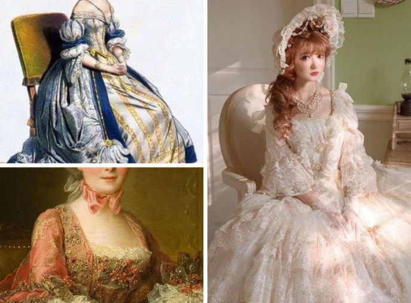
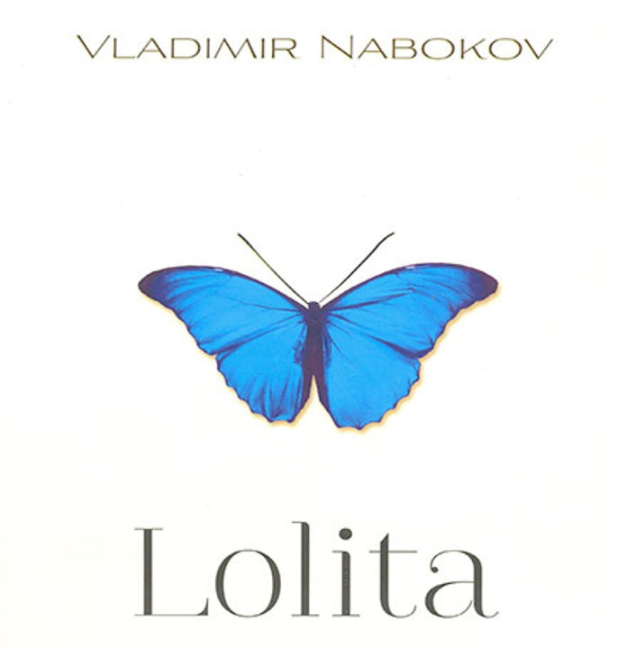
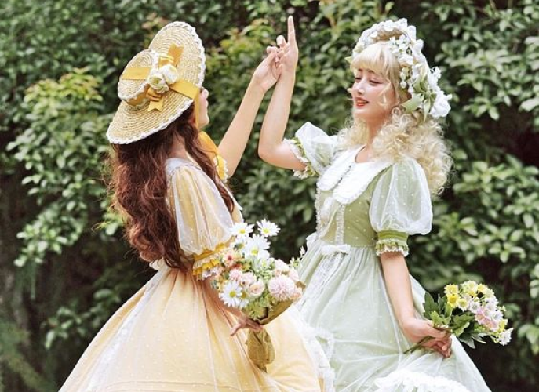
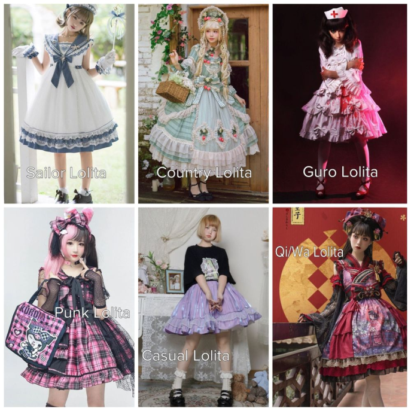

Trang chủ
Tin tức
Tất cả tin tức
Phong cách thời trang Lolita: Không hề "khoe da thịt" gợi cảm như nhiều người lầm tưởng?
19:56 3/92022
Được xem như một tiểu văn hóa thời trang đến từ Nhật Bản, phong cách thời trang Lolita cũng có một câu chuyện riêng đáng kể, đáng nghe, vừa thú vị vừa gây bất ngờ cho các tín đồ thời trang.
Phong cách thời trang Lolita là gì?
Thời trang Lolita được định nghĩa như là một phong cách thời trang đường phố tại đất nước mặt trời mọc. Nó còn có tên gọi là Thời trang Harajuku vì nó ra đời tại đây. Dù được sinh ra ở Nhật Bản nhưng Lolita lại chịu sự ảnh hưởng của phong cách thời trang từ thời nữ hoàng Victoria ở Anh vào thế kỉ 17 và được nhấn nhá bởi những hoa văn tinh xảo theo phong cách Rococo của Pháp thế kỉ thứ 18.
Dù được sinh ra ở Nhật Bản nhưng Lolita lại chịu sự ảnh hưởng của phong cách thời trang từ thời nữ hoàng Victoria ở Anh vào thế kỉ 17 và được nhấn nhá bởi những hoa văn tinh xảo theo phong cách Rococo của Pháp thế kỉ thứ 18.
Cột mốc quan trọng của câu chuyện cuộc đời phong cách Lolita
Mặc dù Nhật Bản là "cái nôi" của thời trang Lolita nhưng bắt nguồn cụ thể của nó hiện tại vẫn là
một ẩn số. Vẫn chưa có một tài liệu nào đưa ra con số chính xác năm phong cách ra đời, chỉ biết
rằng Lolita trở nên phổ biến với sự xuất hiện của nhiều thương hiệu chuyên sản xuất những trang
phục được xem là phong cách Lolita ngày nay như: Milk, Pink House hay Pretty (mà ngày nay là
Angelic Pretty) vào cuối những năm 1970.
Vào thập niên 1990, thời trang Lolita trở nên phổ biến hơn nhờ các ban nhạc nổi tiếng
lúc bấy giờ diện. Những trang phục mà những ban nhạc này diện khá rắc rối và có phần rườm rà.
Vào thập niên 90s phong cách Lolita đã được phổ biến ở Nhật
Đến những năm 2000, trào lưu Lolita bùng nổ thông qua hình ảnh của các ban nhạc theo phong cách Visual-kei (phong cách thời trang đặc trưng ca sĩ nhạc rock thập niên 80, 90), chẳng hạn như ban nhạc Malice Mizer, Guitarist Mana,...Phong cách Lolita bắt đầu phổ biến trên thế giới và đến gần hơn với các tín đồ đam mê phong cách này thông qua hệ thống các cửa hàng toàn cầu cũng như sự phát triển của hình thức bán hàng trực tuyến.
Malice Mizer và phong cách Visual-Kei đặc trưng
Từ thời điểm đó, các trường phái Gothic, Kuro và Shiro Lolita được giới trẻ lăng xê nhiệt tình ,
trong khi Sweet Lolita (Ama Lolita) có phần trầm lắng. Nhờ sự phát triển và tính cập nhật xu
hướng của thời trang, thời trang Lolita đã có nhiều thay đổi lớn. Trước kia, những thiết kế của
phong cách Lolita khá đơn giản và đa phần chỉ mang hai màu là đen và trắng. Năm 2005, những họa
tiết in trên trang phục cũng tương đối hiếm hoi và còn đơn giản, không cầu kì, bắt mắt như bây
giờ.
Từ năm 2006 cho đến nay, các họa tiết in trên trang phục đã trở nên chi tiết, đẹp mắt
và phức tạp hơn. Phong cách Lolita cũng thay đổi từ cổ điển thành dễ thương và đáng yêu. Và
chính vì thế, Sweet Lolita cũng trở nên phổ biến trên khắp thế giới hiện nay.
Lolita có phải là phong cách thời trang sexy?
Khi nhắc đến cụm từ "Lolita" thì nhiều người sẽ nghĩ ngay đến phong cách gợi cảm và vô cùng sexy. Vì bị nhầm lẫn khi nó trùng tên với một cuốn tiểu thuyết khá nặng mùi về tình dục, ấu dâm của tác giả Vladimir Nabokov, ngoài ra những năm về trước Lolita còn gắn liền với những bối cảnh tình dục trong phim, truyện…Từ đây đã tạo nên nhiều nhầm lẫn cho người tiếp cận.
Nhưng sự thật là cụm từ Lolita trong "thời trang Lolita" lại đề cập và tôn lên nét ngây thơ và vẻ đẹp đáng yêu của người phụ nữ. Ngược lại với cách suy nghĩ của nhiều người, thời trang Lolita có đi ngược lại hoàn toàn với các xu hướng thời trang "khoe da khoe thịt" ngày càng phổ biến trong xã hội ngày nay. Vì những tín đồ theo phong cách thời trang này thường rất khiêm tốn khi thể hiện tính cách cá nhân, họ thích thể hiện một hình ảnh dễ thương một cách tao nhã hơn là gợi cảm và quyến rũ.
Trang phục Lolita có thiết kế như thế nào?
Như đã nói, Lolita ảnh hưởng khá nhiều bởi thời trang cổ điển phương Tây. Chúng đều hướng đến sự
quý phái và sang trọng nên luôn được đầu tư kỹ về chất liệu vải và đường may,... "Kín đáo" là
một trong những điểm mấu chốt của những thiết kế mang phong cách này.
Với những phiên bản đầu, thời trang Lolita chỉ gồm những items đặc trưng là những chiếc váy midi
dáng phồng, với chiều dài đến ngang đầu gối.
Nhưng khi thời trang Lolita được tiếp cận nhiều hơn và phổ biến ở khắp nơi trên thế giới thì
những thiết kế cũng trở nên đa dạng hơn từ chất liệu, màu sắc đến kiểu dáng. Nhắc đến thời trang
Lolita lúc này, không thể không nhắc đến những items "cộp mác" như những chiếc váy dài chấm đất
với khung hỗ trợ bên trong để tạo độ xòe như một chiếc bánh cupcake, áo nịt ngực corset, những
chiếc áo tay phồng, tất ngang đùi hoặc tất liền quần và những chiếc mũ cầu kỳ…
Phân loại Lolita
Thời trang Lolita được chia ra thành nhiều nhánh nhỏ khác nhau liên quan đến văn hóa ở nhiều nơi trên thế giới như Punk Lolita, Country Lolita, Qi/Wa Lolita, Guro Lolita, Sailor Lolita, Casual Lolita,...
Nguồn: TH&PL
Tin tức nổi bật
Phong cách thời trang Lolita của giới trẻ Việt Nam.
Xu hướng phong cách thời trang Lolita.
Bộ sưu tập mới của thời trang Lolita.
Sự thật về người phụ nữ mặc váy công chúa xuống phố.
Những phong cách lolita nổi bật.
Xu hướng đầm Lolita của “gen Z”.
Lolita dành cho người mới bắt đầu.
Phong cách Lolita chỉ có thể dành cho phái nữ.
Phong cách thời trang của Lolita giới trẻ Việt Nam
TIN TỨC LIÊN QUAN
Lolita Fashion là gì?
Lolita là phong cách thời trang kín đáo, thích hợp về văn hóa của đất nước.
Lolita trong anime...
Có rất nhiều kiểu trang phục phổ biến của các nhân vật trong các bộ anime khác nhau...
Người không hiểu chỉ thấy dị...
Ngược lại vẻ đáng yêu cửa Lolita Sweet thì đặc trưng của phong cách Lolita Gothic là những...
Boystyle Lolita
Boystyle Lolita là phong cách thời trang lolita dành cho phải nam. Nhiều người suy nghĩ ...
Món phụ kiện xinh xắn khiến...
Nhắc đến phong cách "Lolita", nhiều người nhớ đến tác phẩm cùng tên của Vladimir Nabokov...
Sự thật về người phụ nữ...
Lolita là phong cách thời trang công chúa với chiếc váy phồng, kết hợp với những đôi giày...